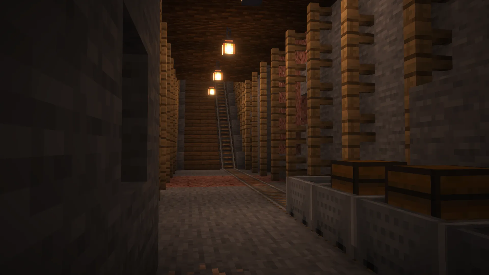
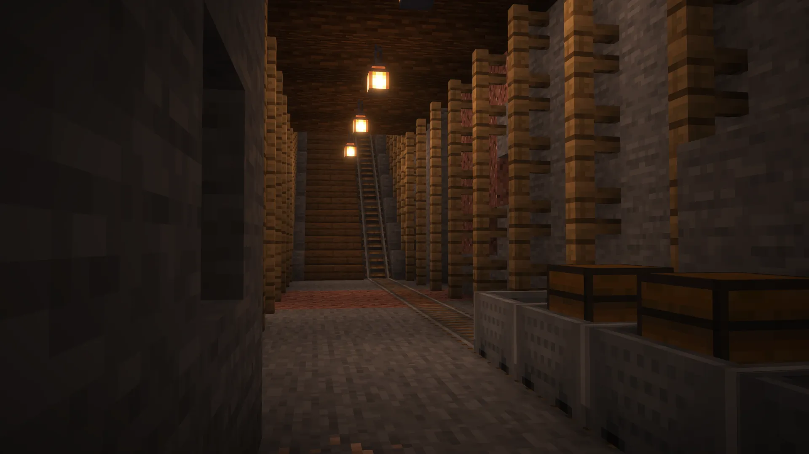

Lost Woods
Forest that was one day shrouded in a thick fog and lost to time. Anyone who dares to enter disappears never to be seen again. Now not many know that there was a village built here, is't late inhabitants being the first to dissapear.
Main entrance
Now no one can enter it's premises.
Garrison
Soldiers stationed here protected the entrance.
 

Mines
There were rumors of gold having been found here.
Diner "Crispy Cod"
Tasty and cheap - that was their motto.
Housing district
The first and also the last one that was built.
Fishing spot
A small lake carefully maintained by the people.

Lumber mill
Crucial in the creation of the village.
Back entrance
Used by lumberjacks to bring in more wood.
Empty lot
Left exacly as it was on that horrible day.